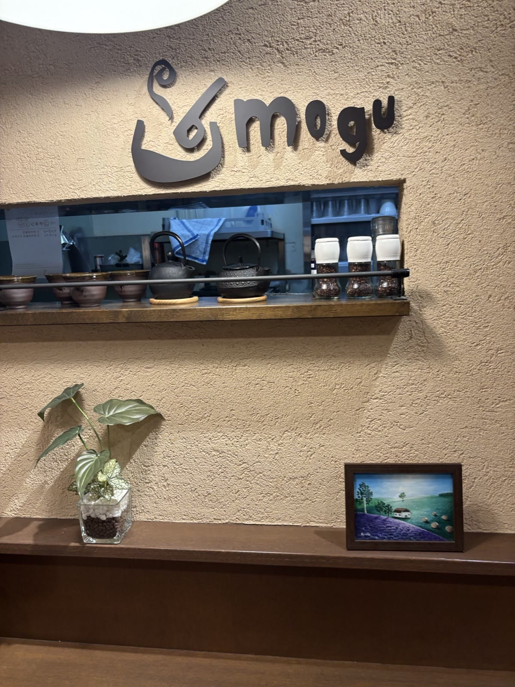
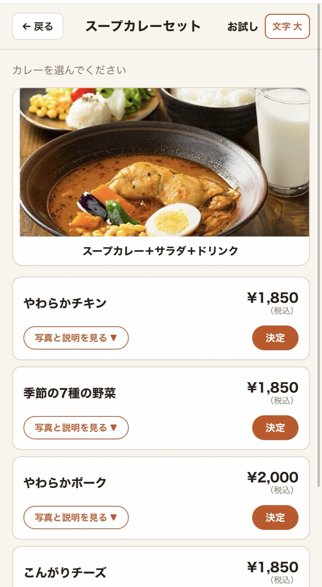
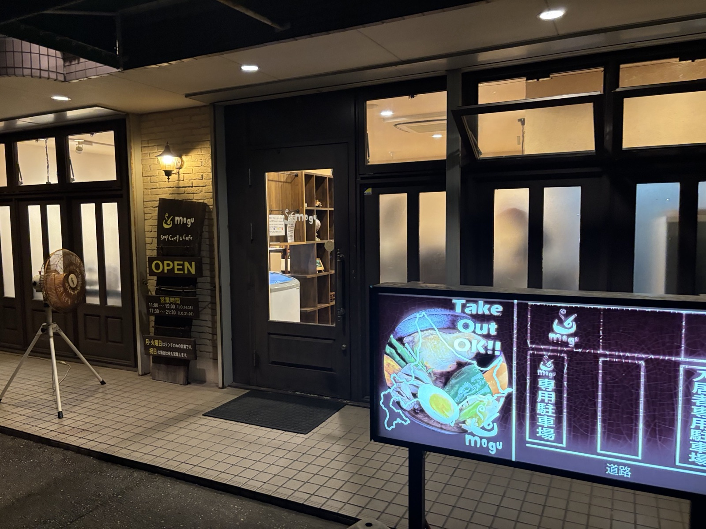
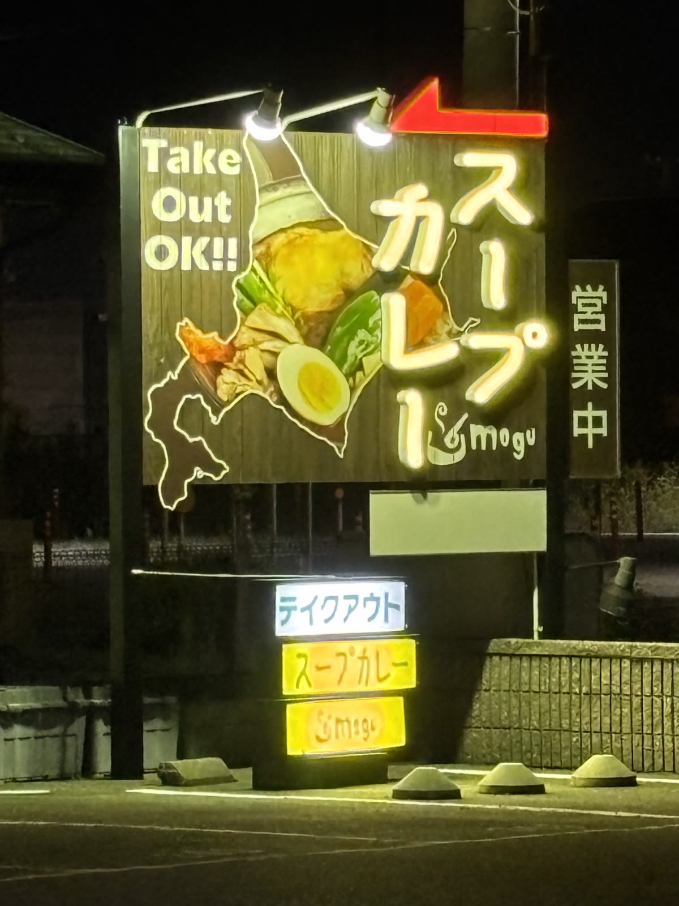
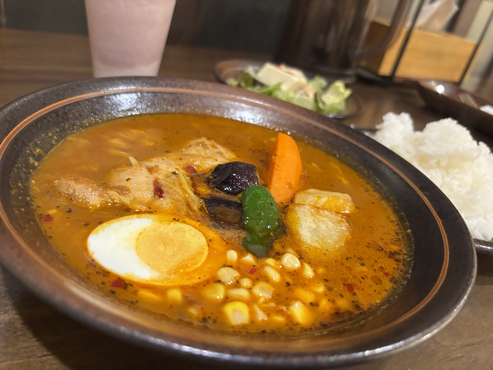
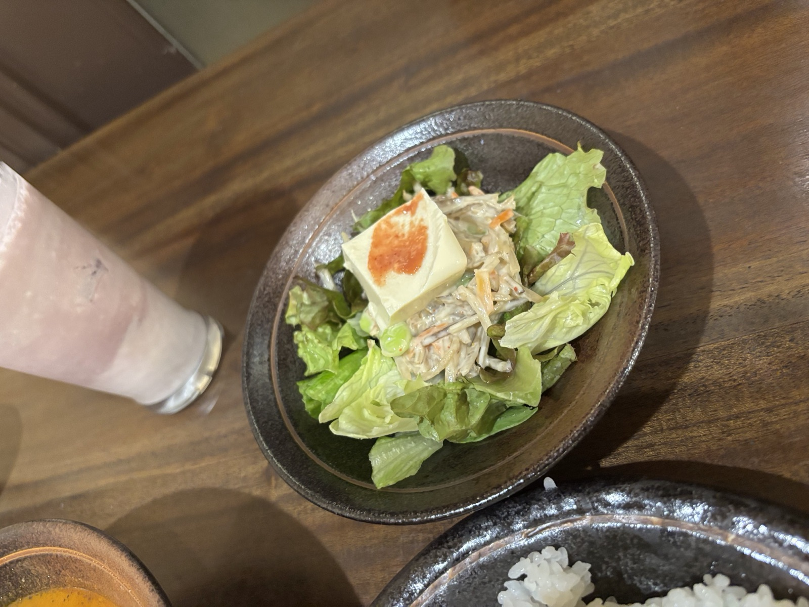
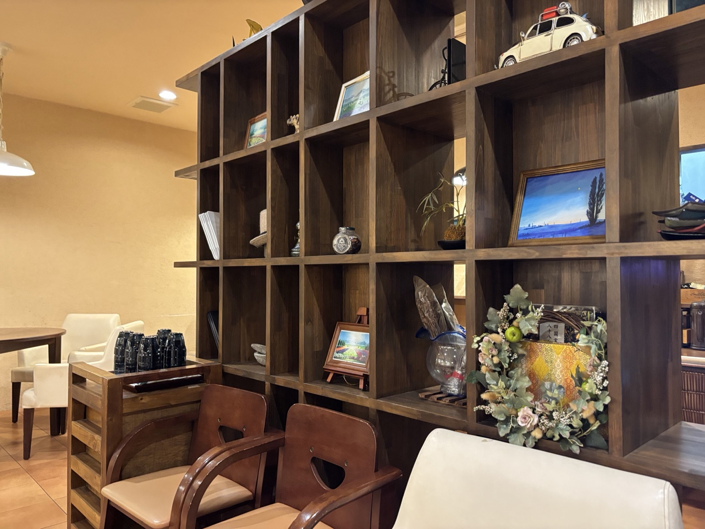
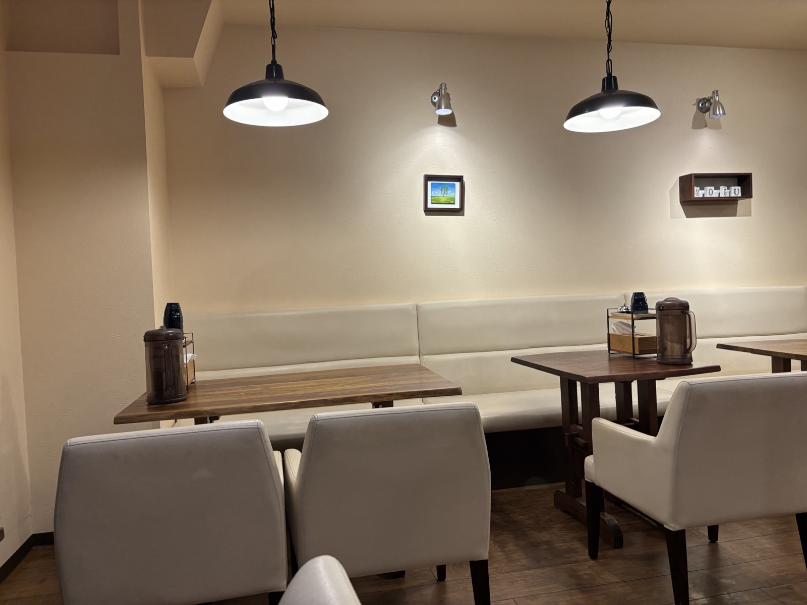

北海道仕込みのスープカレーを、金沢・福増町の夜のあかりの下で。ランチもディナーも、テイクアウトも。
スープカレーの本場・北海道の味をベースに、具材の存在感とスパイスの香りを楽しめる一皿を。金沢市福増町の「スープカレー＆カフェ mogu」は、木のぬくもりを感じる落ち着いた空間で、じっくり味わう専門店です。
やわらかなチキンやポーク、季節の野菜、こんがりチーズ、とろとろ半熟卵。定番のラインナップに加えて、夜はディナー限定のメニューも用意されています。








ランチ
11:00〜15:00 （L.O.14:35）
ディナー
17:30〜21:30 （L.O.21:00）
月・火曜日はディナーお休み（祝日の場合は夜も営業）。営業日はお店のカレンダーで確認できます。